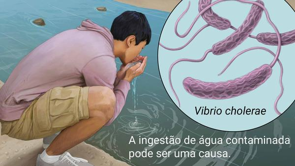

1-Cólera

O Quê É:
Doença bacteriana que causa diarreia grave e desidratação.
Normalmente transmitida pela água.A Cólera é fatal se não for tratada imediatamente.
É uma doença muito rara, Menos de 15 mil casos por ano no brasil.
O tratamento é feito com auxílio médico.
Propaga-se por água ou alimento
contaminado.
Requer um diagnóstico medico.
Sempre requer exames laboratoriais ou de imagem.
Os principais sintomas são diarreia e desidratação. Raramente, choque hemorrágico (quando uma pessoa perde mais de 20% do sangue ou fluido corporal) e convulsões podem ocorrer em casos graves.
Curto prazo:
Resolve-se em dias ou semanas.
Crítico:
Necessita de atendimento de emergência.
2-Febre Maculosa
O Quê É:
Doença infecciosa com uma erupção característica, muitas vezes transmitida pela picada de um carrapato.
A febre maculosa é uma doença possivelmente fatal que costuma ser causada pela picada de um carrapato infectado com bactérias da família Rickettsia.
É uma doença muito rara, Menos de 15 mil casos por ano no brasil.
O tratamento é feito com auxílio médico.
Propaga-se por picadas ou ferroadas de animais ou insetos.
contaminado.
Requer um diagnóstico medico.
Sempre requer exames laboratoriais ou de imagem.
Os sintomas incluem febre, dor de cabeça e dores musculares. Pode haver erupções, geralmente com pele escura ou crosta no local da picada de carrapato.
Curto prazo:
Resolve-se em dias ou semanas.
Crítico:
Necessita de atendimento de emergência.
Doenças Causadas Por Protozoários
1-Amebiase
O Quê É
Infecção parasitária do cólon causada pela ameba Entamoeba histolytica.
A amebíase é uma infecção mais comum em áreas tropicais com más condições de saneamento.
Ela é disseminada pela ingestão de alimentos crus, como frutas, que podem ter sido lavados com água local contaminada.
Requer um diagnóstico medico.
Propaga-se por agua ou alimentos contaminado.
contaminado.
Requer um diagnóstico medico.
Sempre requer exames laboratoriais ou de imagem.